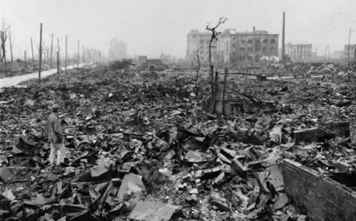

La Segunda Guerra Mundial dejó profundas consecuencias económicas a nivel global. La destrucción masiva de infraestructuras en Europa y Asia, sumada a la recesión y el empobrecimiento generalizado, afectó gravemente a las economías de los países involucrados. Sin embargo, la reconstrucción fue impulsada por iniciativas como el Plan Marshall, que ayudó a Europa a recuperarse gracias a la ayuda económica de EE.UU. Mientras tanto, Estados Unidos emergió como la principal potencia económica mundial. La guerra también aceleró la descolonización, con muchos países obteniendo su independencia, lo que alteró las relaciones económicas globales. Además, se establecieron nuevas instituciones financieras como el FMI y el Banco Mundial, que redefinieron el sistema monetario internacional. La guerra fría dividió al mundo en bloques económicos, y las economías europeas adoptaron un Estado de bienestar. Finalmente, la deuda pública aumentó en muchos países, mientras que el mercado laboral experimentó cambios, con un mayor rol de las mujeres en la fuerza laboral.
